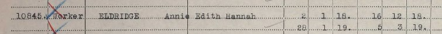
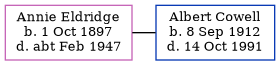

Annie Edith Hannah Cowell (née Eldridge) 1897 - c1947
[ Home ] | [ Calendar ] | [ Surnames Index ] | [ Errors ] | [ Family History ]Annie Eldridge, the wife of Albert Edward Cowell (the first cousin once-removed on the mother's side of Nigel Horne), was born in Nackington, Kent, England on 1 Oct 18971,2. She married Albert (a farm worker horseman) in Thanet, Kent, England around Nov 19355 (Oct-Nov-Dec).
During her life, she was living at Nackington Road in Nackington on 31 Mar 19016; at Church Cottages in Nackington on 2 Apr 19117; and at 9 High Street, Manston, Kent on 29 Sept 19391. She served in the army from 2 Jan 1918 to 5 Mar 1919 (queen Mary's Army Auxiliary Corps).
She died c. Feb 1947 in Thanet3,4.
Citations
- 1939 Register - Findmypast (was recorded at this address)
- England & Wales births 1837-2006 - Findmypast
- England & Wales deaths 1837-2007 - Findmypast
- Volume: 5B; Page: 1143; Line number: 97; Record set: England & Wales deaths 1837-2007; Subcategory: Deaths & burials; Category: Birth, Marriage & Death (Parish Registers); Collections from: United Kingdom; Volume: 5B; Page: 1143; Line number: 97; Record set: England & Wales deaths 1837-2007; Subcategory: Deaths & burials; Category: Birth, Marriage & Death (Parish Registers); Collections from: United Kingdom;
- England & Wales, Marriage Index: 1916-2005 Online publication - Provo, UT, USA: The Generations Network, Inc., 2009.Original data - General Register Office. England and Wales Civil Registration Indexes. London, England: General Register Office. © Crown copyright. Published by permission of the Cont
- 1901 England, Wales & Scotland Census - Findmypast (was age 3 and the daughter of the head of the household)
- 1911 Census for England & Wales - Findmypast (was age 14 and the daughter of the head of the household)
Media
Annie Eldridge - WWI record

1939 Register Transcription - TNA-R39-1763-1763I-009-24
England & Wales marriages 1837-2008 - BMD/M/1935/4/AZ/000380/086
England & Wales deaths 1837-2007 - BMD/D/1947/1/AZ/000272/097
England & Wales births 1837-2006 - BMD/B/1897/4/AZ/000174/334
1939 Register - TNA/R39/1763/1763I/009/25
Family Trees - FMP/1089932801
1911 Census for England & Wales - GBC/1911/RG14/04307/0017/3
1901 England, Wales & Scotland Census - GBC/1901/0005464227
Family Tree
Map
Generated by ged2site. Last updated on Jul 3, 2024
Known Issues
No records of living with anyone
Location for the event between 2 Jan 1918 and 5 Mar 1919 is empty